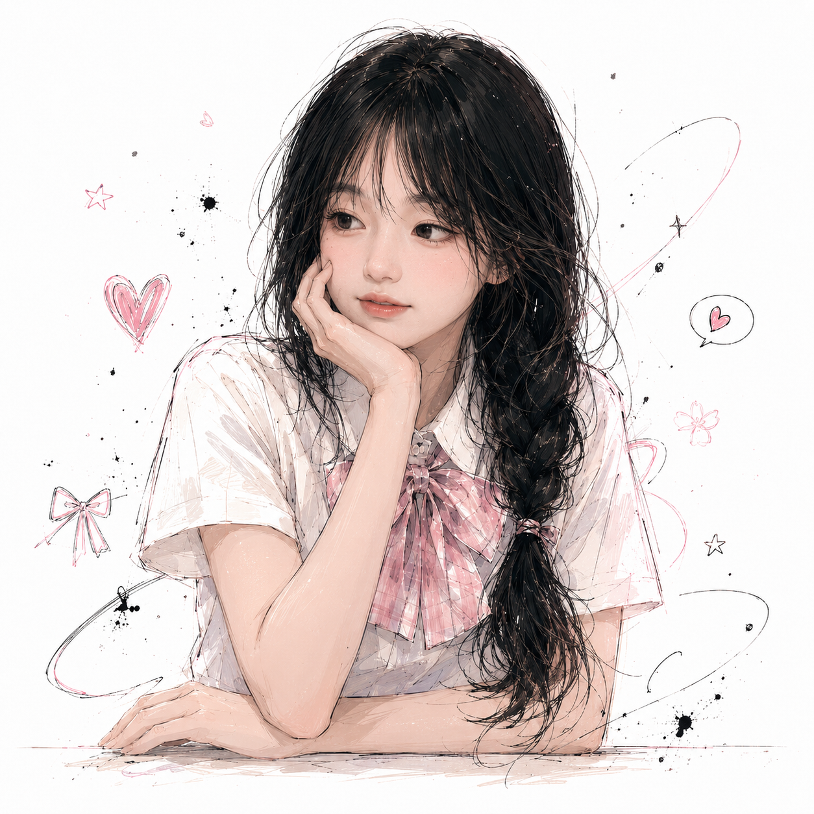

100,000 Hearts for HanBaby
十万份喜欢，感谢相遇
从第一个关注，到十万份喜欢。每一个数字背后，都是一次真诚的停留。
今天也要元气满满呀～
About HanBaby
关于憨宝宝
她是镜头前有一点害羞、有一点可爱，也有很多真诚的憨宝宝。 她用日常、情绪和生活碎片，陪伴越来越多的人。 这里不只记录她的成长，也记录每一位粉丝与她相遇的瞬间。
- 昵称憨宝宝
- 平台抖音
- 粉丝10 万+
- 内容日常分享 · 生活记录 · 可爱互动
- 地区湖南
- 粉丝称呼憨家军
黑色长发
清透妆感
甜酷气质
真实自然
「愿每一次打开，都能碰到一点温柔。」 — 主播寄语
Featured Moments
憨宝宝的闪光瞬间
最高点赞、日常分享、颜值高光与成长记录，收藏那些让人会心一笑的瞬间。
Support Center
应援中心
理性、真实、自愿参与。每一份喜欢都同样珍贵。
演示
十万粉丝纪念 · 生日祝福收集
为憨宝宝集齐 10,000 份真心祝福，点亮小宇宙里的纪念星河。
每日应援任务
完成任务可获得爱心值与应援积分（仅本机浏览器记录 · 无账号）
-
观看最新作品
去抖音刷一刷今日份可爱
-
点赞与收藏
把喜欢留在作品里
-
发布正向评论
说一句真心话就好
-
每日签到
来小宇宙打个卡
-
分享给朋友
邀请新伙伴加入憨家军
本周应援纪念榜
演示榜单（写死在前端）。纯静态站无法做全站实时排行；每一份喜欢都同样珍贵。
Our Journey
我们一起走过的路
这不是冰冷的数字增长记录，而是一段属于憨宝宝和所有粉丝的共同记忆。
Fan Creation Gallery
憨家军创作馆
绘画、海报、表情包、壁纸……把喜欢变成作品，挂进小宇宙画廊。
投稿需后端/表单服务，纯静态站暂不支持上传 · 当前为展示示例
Support Assets
应援素材下载
统一视觉规范的应援资源。禁止商业售卖、冒充官方或恶意丑化。
使用规范
- 禁止恶意丑化、商业售卖、冒充官方
- 禁止泄露主播隐私
- 二创需注明来源；商业合作需单独授权
Join the Fan Army
加入憨家军
成为小宇宙的一员，一起陪伴、一起应援、一起记录。（游客模式 · 无真实登录）
- Lv.1 初见小星星
- Lv.2 陪伴小爱心
- Lv.3 憨家军成员
- Lv.4 紫色守护者
- Lv.5 星河陪伴官
- Lv.6 永久纪念粉
